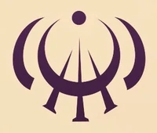

Investiture in the Cosmere
Nalthis
Awakening
Awakening is a manifestation of Investiture on the world of Nalthis. It is the art of combining color, BioChromatic Breath, and an Awakening command in order to animate an object, resulting in one of four types of BioChromatic entities.
Scadrial
Allomancy
Allomancy is the most widely used form of Investiture the world of Scadrial, and is locally known as one of the three Metallic Arts. People who have one or more Allomantic abilities are called Allomancers with each Allomantic power being paired with a type of metal, whichmust be ingested and "burned" to activate.
Roshar
Surgebinding
Surgebinding is a prime manifestation of Investiture on Roshar. Surgebinders can manipulate ten fundamental forces locally known as Surges, with each Surgebinder having access to two of the Surges with overlap between them, by infusing objects or beings with Stormlight.